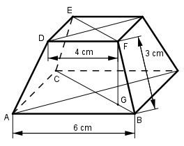

Aufgabe 253 Wie groß ist das Volumen V des quadratischen Pyramidenstumpfes?

Satz von Pythagoras im Dreieck ABC: BC2 = AB2 + AC2 = 62 cm2 + 62 cm2 = 72 cm2 |√ BC = 8,5 cm Satz von Pythagoras im Dreieck DFE: EF2 = DF2 + DE2 = 42 cm2 + 42 cm2 = 32 cm2 |√ EF = 5,66 cm BC - EF 8,5 cm - 5,66 cm GB = --------- = ------------------ = 1,4 cm 2 2 Satz von Pythagoras im Dreieck GBF: BF2 = GB2 + GF2 | - GB2 GF2 = BF2 - GB2 = 32 cm2 - 1,42 cm2 = 7,04 cm2 |√ GF = 2,65 cm Pyramidenstumpf: V = V = cm3 2,65 V = ------- * (36 + 6 * 4 + 16) cm3 3 V = 67,1 cm3